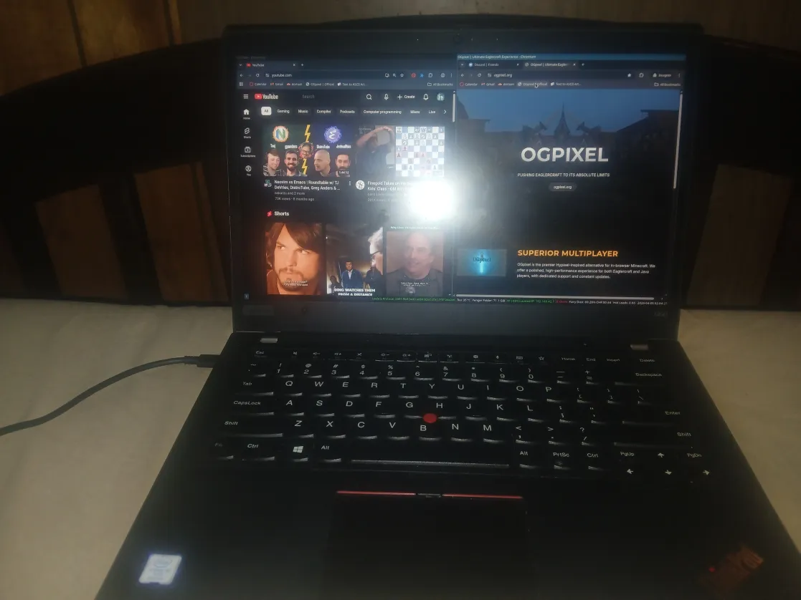

As of 2025, I mainly use a ThinkPad T490 laptop along with a desktop PC. Both systems run Arch Linux, which I chose because of its simplicity, flexibility, and the control it gives me over my system.
I use the i3 window manager for most of my daily workflow. I like how lightweight and keyboard-driven it is, which helps me stay productive and focused.
Occasionally, I switch things up and use dwm just for fun and experimentation. For tasks that require a full graphical environment, I use KDE Plasma.

I spend most of my time programming. I work on web development projects, experiment with creating Minecraft clients, and build small personal tools.
I also enjoy programming in C and C++, mainly for learning purposes and understanding how things work at a lower level.
Recently, I’ve been trying to create my own games. It’s a fun challenge and gives me a way to combine creativity with programming.
I used to get bored easily just playing games, which is one of the reasons I started focusing more on coding and building things myself.
My main editor is Emacs. I really enjoy its customization, themes, and powerful editing capabilities. I also like using vim-style keybindings.
Other editors and IDEs I use include Vim, Helix, IntelliJ IDEA, and VSCodium. Each tool has its own strengths depending on the type of project I'm working on.
I mainly use the internet to learn and explore. I often read other people’s code, watch programming videos, and look up documentation.
I also use it for entertainment, such as watching YouTube videos and movies.
My primary browser is Brave because it blocks ads and trackers, which makes browsing faster and less annoying.
This site is maintained in a very simple way. I write and edit everything manually in HTML without using any frameworks.
The source code is available here: GitHub Repository.
If you’d like to contribute, feel free to fork the repository, make changes, and submit a pull request.
My favorite languages are Java and C++. I like Java for its structure and ecosystem, and C++ for its performance and control.
I originally got into programming because I realized you could tell a computer exactly what to do. That idea really interested me and made me want to learn more.
In the future, I want to improve my skills in systems programming and game development. I also want to contribute to open-source projects and build larger, more complex applications.
Another goal is to keep learning new technologies while staying true to simple and efficient tools.